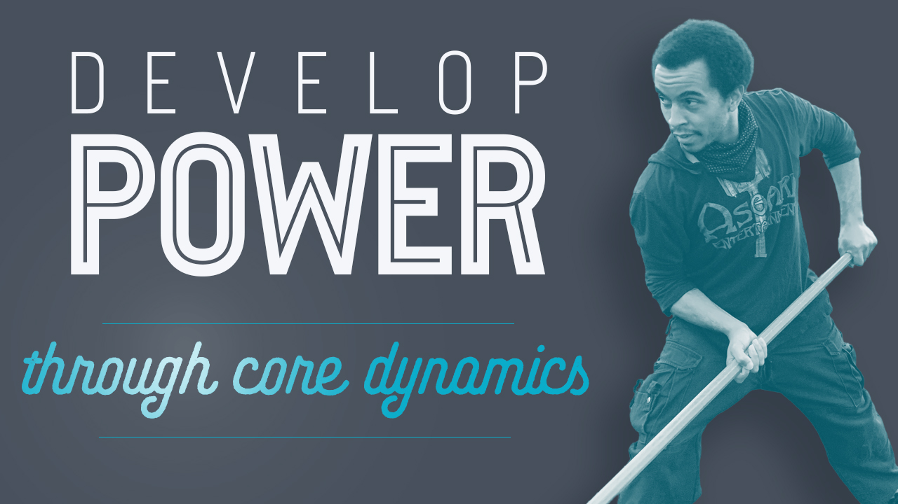
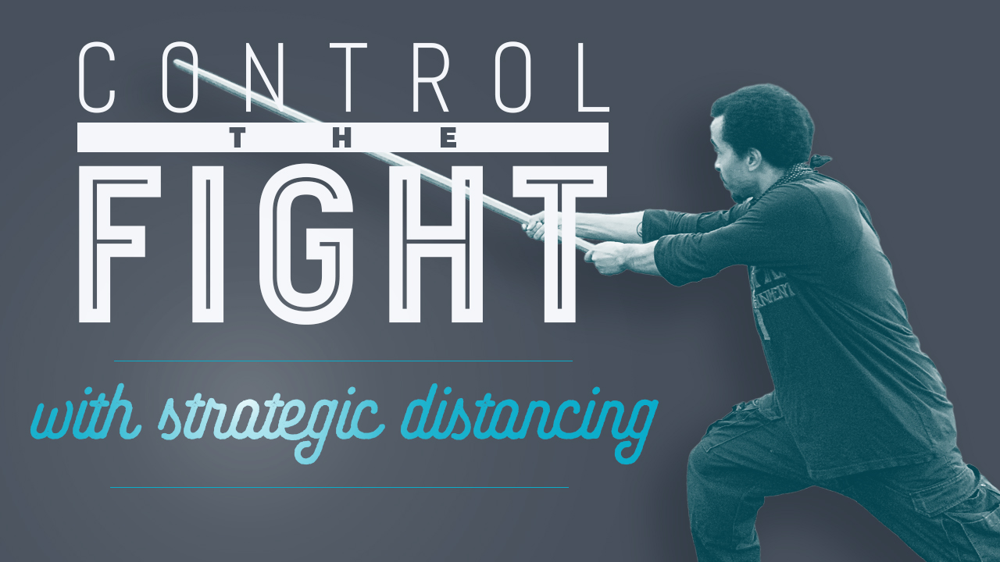
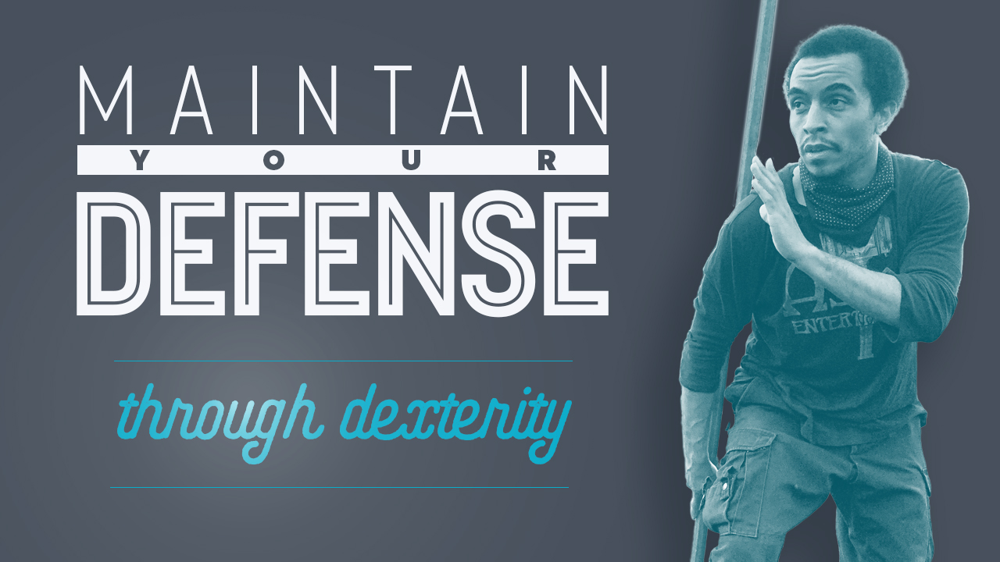

Combative Staff
with the Yokai Gumi
During this period of warm months and social distancing, the Yokai Gumi school of the Kurai Kotori Ryu will be studying the long staff in public parks in Denver, CO.
Few weapons are more universal than the staff. Staves of various lengths and heft exist throughout classical martial arts and contemporary combat systems, and they have never ceased to be relevant tools in circumstances of high conflict.
Using a curriculum centered on three fundamental aspects of fighting which are particularly salient in the study of pole arms, students will hone transferable skills which will benefit all of their martial studies:
CORE BODY DYNAMICS
You've heard that a weapon (or any tool) should be treated as an extension of yourself. But, that advice is pretty abstract and hard to use if you don't understand how to make that happen. This curriculum emphasizes the generation of power in core muscle groups and the orientation of the limbs to reduce wasted and contradictory motions which diminish and misdirect energy. In this way, the student learns to extend force from their center, through the limbs, through the weapon, and into the target.
STRATEGIC DISTANCING
You've heard that a weapon (or any tool) should be treated as an extension of yourself. But, that advice is pretty abstract and hard to use if you don't understand how to make that happen. This curriculum emphasizes the generation of power in core muscle groups and the orientation of the limbs to reduce wasted and contradictory motions which diminish and misdirect energy. In this way, the student learns to extend force from their center, through the limbs, through the weapon, and into the target.
WEAPONS CONTROL & RETENTION
The staff can be a cumbersome tool to wield — more advanced pole arms are even more so. Poor grip shape during a clash, or even a strike, can send your staff flying out of your control. In these classes, the student will learn what facilitates consistent control of the weapon, especially while clashing and parrying with opponents.
How do I get started?
No need to enroll or RSVP, check the calendar here, find a class that you can make it to, and show up. For the first class, come a few minutes early to go over a little bit of paperwork and then you're all set.
Who is this training for?
Children and adults are both welcome and encouraged to attend. Children should be old enough and mature enough that they are both reading and could competitively play a game of Simon Says. Adults should be spry enough that they could play a game of pick up soccer or basketball and probably not end up in a hospital. That's it. If you're in that range then you're golden.
How much does this cost?
You're welcome to stop by at no cost — have a class on the house. If you decide to stick with it 🤣, or if you just really believe in the cause, you can support the school on Patreon. If you won't make it in frequently you may pay for drop-in classes through PayPal, or just pass some cash to the instructor; ten dollars is reasonable.
Do I have to wear a mask?
Short answer: no. We're training in a park. Just give people plenty of space and you don't need to wear a mask.
Long answer: please do. It will help everyone to move around more easily and to get in close enough to hear when instructions are being given if students are in masks. That being said, we understand that we're doing exercise and that actually doing the training with limited air flow might not be a challenge everyone is ready for. Please, just be respectful of everyone's space and we'll all be just fine.
We will have a designated spot where people will clean and exchange staves.
further reading
What should I bring?
Bring some water. Wear clothes that you feel comfortable in. We recommend full length pants, and — if you're going to be coming regularly — we have a dress code. I'm not going to lay that all out here because you shouldn't worry about anything other than making it in if you believe you will benefit from this training.
Really, we'd love to have you stop in and try this out.
Hope to see you soon,
Deacon Rodda
2nd Dan Kurai Kotori Ryu